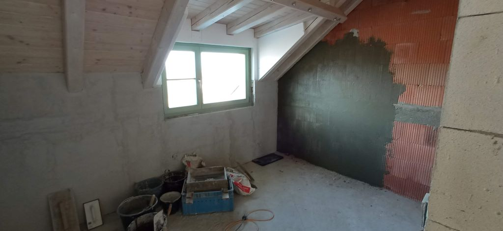

Leden pod Větřákem - co se povedlo a poznatky pro příští zimu

Celkově letošní zimu opět zvládáme trochu líp, než tu předchozí. Ale stále je prostor, co vylepšit. Proč o tom pořád píšu? Řeknu vám drobné tajemství.
Opakuju to tady furt, ale asi je to pro mě téma. Na zimu na venkově se prostě člověk musí připravit. A tou přípravou nemyslím jen pořídit si tlustý svetr a předplatné Netflixu, nebo tak něco. Utěsňuju škvíry, kudy do domu proudí chladný vzduch. Utěsňuju trhliny ve svém zdraví, v sebevědomí a v klidu. A že je pořád na čem pracovat. Plechovka kávy z Lidlu jako kotevní bod v chladné temnotě... No jo, zima na lontě člověka vymáčkne na dřeň...
Ve svém okolí mám pár lidí, kteří také touží po úniku z města na venkov. Většinou u nich nejde o nějakou touhu být blíž přírodě nebo tak něco, ale spíš je to dáno cenou nemovitostí v Brně a blízkém okolí. Pokud teď chcete dům, musíte dál. Takže ne třeba Moravský kras, ale Bruntálsko nebo Břeclavsko. Slyšeli jste třeba někdy o městě s názvem Odry? Já donedávna taky ne, ale dovedu si představit, že bych se tam přestěhoval. Každopádně je ale dobré pozorovat, že městští lidé kolikrát moc přesně neví, do čeho se migrací na lont chystají. Ani já to nevěděl. Udělal bych to znovu? Jako tu cestu z města... Jo, ale jinak a lépe.
Zatímco v paneláku v Brně žijete v pěkném a pohodlném bezčasí, na venkově na vás dýchne cyklický čas a jeho dynamika. Ve městě se nestaráte o teplo, světlo, odpad. Jídlo máte obvykle pár kroků. Doma stejná teplota, ať je venku příjemných dvacet, nebo minus deset. No dobře v létě možná vedro, ale jste od těchto věcí odtrženi, zatímco na venkově ne. V létě je pohoda. To jste pořád venku, večer sedíte na dvorku, něco popíjíte, často máte oheň a špekáčky, spíte pod stanem na zahradě, nebo pod širákem na karimatce. Okolo běhají děti - vaše i sousedovic. A psi - váš a sousedovic. Prostě kočovnická pohoda. Ale pak přijde zima, což na instagramových obrázcích vypadá dobře, ale v praxi jde většinou o vlezlé chladno/vlhko, tmu a blátivé cesty. A s tím se musíte vyrovnat. To není stížnost, to je prostě fakt, se kterým je nutné počítat a od kterého je potřeba se nějak odrazit při designu vnějších věcí a vnitřního psychického prostoru.
Topení je základ
No jo, tohle jsem v rámci loňska trochu podcenil. Letos kvůli vysokým cenám elektřiny topíme víc dřevem, spotřebujeme zhruba 5 m3 dřeva za topnou sezónu. Dřevo koupit na jaře, ale raději tak dva kubíky navíc. Třeba aby bylo čím vytopit indiánskou saunu. Začátkem léta nařezat a nasekat. Přes léto nechat vyschnout - dva roky jsou ideální, ale i jedno léto IMHO stačí. A co je nejdůležitější. Během léta si prostě občas uvědomit, že "winter is comming" a nedpocenit přípravu. Hodí se také záložní dřevěné brikety - topí fakt dobře a pokud uvěříme výrobcům, že nahradí dřevo o pětinásobku svého objemu, tak nevychází zas tak draho, jak by se mohlo na první pohled zdát.
Naložená zelenina
Vypěstovat nějaké ovoce a zeleninu je jen jedna část problému. Ta druhá je, jak to všechno zpracovat. Produkty se dají různě vyměňovat s lidmi, kteří to mají podobně. Ale v našem případě není těch vypěstovaných věcí zase tak moc. Takže jde o to spíš všechno adekvátně uskladnit a zakonzervovat. Týká se třeba dýní, které nám letos zplesnivěly, ale jablka se podařilo uskladnit docela dobře. Dostali jsme také pytel brambor, takže teď pozoruju, jak to s ním půjde. Občas neplánovaně dostanete čerstvého králíka - mrtvolku s nožičkama a hlavou - hnedka zpracovat a šup s ním do trouby.
Jablka jsme průběžně sušili -- gut. Ale rád bych i víc zeleniny naložil. Právě třeba u kysaného zelí totiž tuším jeho velký potenciál v rozhánění zimních depek. Dtto okurky. A konečně kimčchi. Takže velký úkol na léto -- koupit zelák a už nakrouhané zelí a zaměřit se na tohle. Navíc ceny potravin rostou, takže umět uskladnit metrák brambor, sud zelí, a třicet sklenic naložených okurek - v obchodě stojí 60 Kč/sklenice, peklo - to všechno by se mohlo stále více hodit. V delším časovém horizontu pak klobásy a sušené maso. Ale to jen s mírou. Výhledově nákup pšenice a žita a mlít vlastní mouku.
Přizpůsobit prostor
Jasně, takový ten designový domácí minimalismus může být docela cool, ale v podmínkách zimního venkovského mordoru moc nepomáhá. Je mnohem lepší se zaměřit na pohodlí, v takové - řekněme - přízemnější formě. "Domácí útulnost je blaženě psychotická," píše Venkatesh Rao.) Nevím přesně, jak to myslel, a zrovna psychózy bych si z dobrých důvodů do huby moc nebral. Ale něco na tom bude. Protože domácí pohodlí, to je to, oč tu v zimní tmě běží. Kafe a čaje, teplo, měkká deka na pohovce a vařit si dobré jídlo. Občas jsem se přistihl, že mě ve slabých chvilkách dojímá i kýčovitá plechovka kávy z Lidlu. Creepy, vím, ale zima v bahně dělá svoje. A najít si smysluplné vnitřní aktivity - jóga, chi-kung, tajči, hra na hudební nástroje, programování, bastlení, broušení nožů... Možnosti tu jsou...
No a co se v lednu povedlo?
- Máme elektřinu v téměř celém patře a začali jsme dělat omítky v prvním dětském pokoji. Malými kroky a o to vytrvaleji pokračujeme vpřed - do léta budou mít děti pokoj.
- Zasázel jsem česnek - jeden lednový týden nemrzlo, takže stroužky namořené Sulkou putovaly do země. Bude ho více - v česneku jsme soběstační - něco rozdáme, něco spotřebujeme.
- Zpracovávám osevní plán - no spíš takovou úvahu. Letos bude rok rajčat, brambor, ředkviček, hrášku a křenu. Samozřejmě také obligátní dýně.